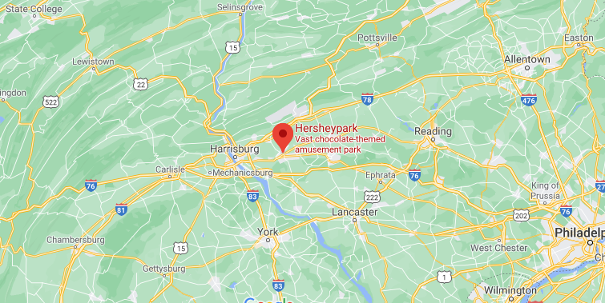

Hi, my name is Eric. I have worked in Agriculture for several years. I always wanted to start my own farm. What interested me about farming is that it is a simple and pure endevor. You are providing a basic human need, and also working with the earth. It allows you to work with mother nature, provide a service that everyone needs, and give back to the community.
My farm will focus on growing a variety of healthy fruits and vegtables for the local community. People are begining to care much more about where their food comes from. Sourcing your food locally (when possible) is a great way to feed your family fresh food, as well as supporting your community.
Here is a map to our Farm
(note: this is Hershey Park, not acutally my farm)
